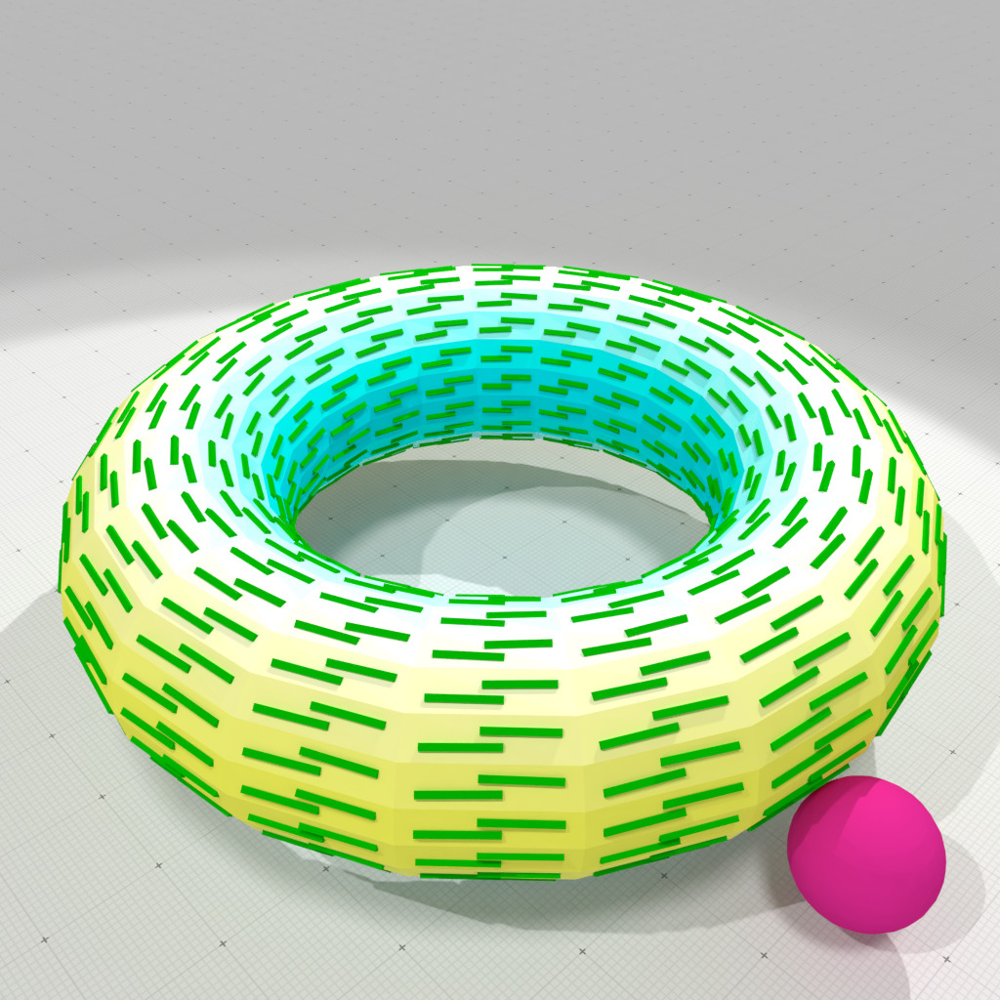

Loading...
Searching...
No Matches
geometry/meshes/curvature-measures-nc-XY-3d.cpp
Computation of principal curvatures and directions on a torus mesh, using Normal cycle curvature measures (based on the theory of Normal cycle).
# a 20x20 discretized torus with a radius 0.5 for measures ./examples/geometry/meshes/curvature-measures-nc-XY-3d 20 20 0.5
outputs
Expected k1 curvatures: min=-0.5 max=0.25 Computed k1 curvatures: min=-0.581281 max=0.441977 Expected k2 curvatures: min=1 max=1 Computed k2 curvatures: min=0.904081 max=1.06404
It also produces several OBJ files to display curvature estimation results, example-nc-K1.obj, example-nc-D1.obj, example-nc-K2.obj, and example-nc-D2.obj as well as the associated MTL file.

Normal cycle smallest principal curvature and direction, r=0.5 | 
Normal cycle greatest principal curvature and direction, r=0.5 |
- Note
- Normal cycle theory fails on bad sampling of smooth surfaces. A well known example is the Schwarz lantern. You may try the following:
./examples/geometry/meshes/curvature-measures-nc-3d lantern 20 20 0.5
outputs
Expected k1 curvatures: min=0 max=0 Computed k1 curvatures: min=0.404148 max=0.417222 Expected k2 curvatures: min=0.5 max=0.5 Computed k2 curvatures: min=0.875976 max=1.85041
#include <iostream>
#include <algorithm>
#include "DGtal/base/Common.h"
#include "DGtal/math/linalg/EigenDecomposition.h"
#include "DGtal/shapes/SurfaceMesh.h"
#include "DGtal/shapes/SurfaceMeshHelper.h"
#include "DGtal/geometry/meshes/NormalCycleComputer.h"
#include "DGtal/io/writers/SurfaceMeshWriter.h"
#include "DGtal/io/colormaps/GradientColorMap.h"
#include "DGtal/io/colormaps/QuantifiedColorMap.h"
#include "DGtal/helpers/Shortcuts.h"
{
DGtal::GradientColorMap< double > gradcmap( min_value, max_value );
gradcmap.addColor( DGtal::Color( 0, 255, 255 ) );
gradcmap.addColor( DGtal::Color( 255, 255, 255 ) );
gradcmap.addColor( DGtal::Color( 255, 255, 0 ) );
gradcmap.addColor( DGtal::Color( 255, 0, 0 ) );
return gradcmap;
}
void usage( int argc, char* argv[] )
{
std::cout << "Usage: " << std::endl
<< "\t" << argv[ 0 ] << " <shape> <m> <n> <R>" << std::endl
<< std::endl
<< "Computation of principal curvatures and directions on a shape, " << std::endl
<< "using Normal Cycle anisotropic curvature measure." << std::endl
<< "- builds a <shape> in {torus,lantern,sphere}, with " << std::endl
<< " <m> latitude points and <n> longitude points." << std::endl
<< "- <R> is the radius of the measuring balls." << std::endl
<< "It produces several OBJ files to display principal " << std::endl
<< "curvatures and directions estimations: `example-cnc-K1.obj`" << std::endl
<< "`example-cnc-K2.obj`, `example-cnc-D1.obj`, and" << std::endl
<< "`example-cnc-D2.obj` as well as associated MTL files." << std::endl;
}
{
if ( argc <= 1 )
{
usage( argc, argv );
return 0;
}
using namespace DGtal;
using namespace DGtal::Z3i;
// a shape in "torus|lantern|sphere"
std::string input = argv[ 1 ];
int m = argc > 2 ? atoi( argv[ 2 ] ) : 20; // nb latitude points
int n = argc > 3 ? atoi( argv[ 3 ] ) : 20; // nb longitude points
double R = argc > 4 ? atof( argv[ 4 ] ) : 0.5; // radius of measuring ball
SM smesh;
double exp_K1_min = 0.0;
double exp_K1_max = 0.0;
double exp_K2_min = 0.0;
double exp_K2_max = 0.0;
if ( input == "torus" )
{
const double big_radius = 3.0;
const double small_radius = 1.00001; // avoid codacy warnings
smesh = SMH::makeTorus( big_radius, small_radius,
RealPoint { 0.0, 0.0, 0.0 }, m, n, 0,
SMH::NormalsType::VERTEX_NORMALS );
exp_K1_min = ( 1.0 / ( small_radius - big_radius ) );
exp_K1_max = ( 1.0 / ( big_radius + small_radius ) );
exp_K2_min = 1.0 / small_radius;
exp_K2_max = 1.0 / small_radius;
}
else if ( input == "sphere" )
{
const double radius = 2.0;
smesh = SMH::makeSphere( radius, RealPoint { 0.0, 0.0, 0.0 }, m, n,
SMH::NormalsType::VERTEX_NORMALS );
exp_K1_min = 1.0 / radius;
exp_K1_max = 1.0 / radius;
exp_K2_min = 1.0 / radius;
exp_K2_max = 1.0 / radius;
}
else if ( input == "lantern" )
{
const double radius = 2.0;
smesh = SMH::makeLantern( radius, 1.0, RealPoint { 0.0, 0.0, 0.0 }, m, n,
SMH::NormalsType::VERTEX_NORMALS );
exp_K1_min = 0.0;
exp_K1_max = 0.0;
exp_K2_min = 1.0 / radius;
exp_K2_max = 1.0 / radius;
}
// builds a NormalCycleComputer object onto the torus mesh
NC nc( smesh );
// computes area, anisotropic XY curvature measures
auto mu0 = nc.computeMu0();
auto muXY = nc.computeMuXY();
// Estimates principal curvatures (K1,K2) and directions (D1,D2) by
// measure normalization and eigen decomposition.
std::vector< double > K1( smesh.nbFaces() );
std::vector< double > K2( smesh.nbFaces() );
std::vector< RealVector > D1( smesh.nbFaces() );
std::vector< RealVector > D2( smesh.nbFaces() );
// Principal directions computation requires a local face normal
smesh.computeFaceNormalsFromPositions();
for ( auto f = 0; f < smesh.nbFaces(); ++f )
{
const auto b = smesh.faceCentroid( f );
const auto N = smesh.faceNormals()[ f ];
const auto area = mu0 .measure( b, R, f );
const auto M = muXY.measure( b, R, f );
std::tie( K1[ f ], K2[ f ], D1[ f ], D2[ f ] )
= nc.principalCurvatures( area, M, N );
}
auto K1_min_max = std::minmax_element( K1.cbegin(), K1.cend() );
std::cout << "Expected k1 curvatures:"
<< " min=" << exp_K1_min << " max=" << exp_K1_max
<< std::endl;
std::cout << "Computed k1 curvatures:"
<< " min=" << *K1_min_max.first << " max=" << *K1_min_max.second
<< std::endl;
std::cout << "Expected k2 curvatures:"
<< " min=" << exp_K2_min << " max=" << exp_K2_max
<< std::endl;
std::cout << "Computed k2 curvatures:"
<< " min=" << *K2_min_max.first << " max=" << *K2_min_max.second
<< std::endl;
auto colorsK1 = SMW::Colors( smesh.nbFaces() );
auto colorsK2 = SMW::Colors( smesh.nbFaces() );
for ( auto i = 0; i < smesh.nbFaces(); i++ )
{
colorsK1[ i ] = colormapK1( K1[ i ] );
colorsK2[ i ] = colormapK2( K2[ i ] );
}
SMW::writeOBJ( "example-nc-K1", smesh, colorsK1 );
SMW::writeOBJ( "example-nc-K2", smesh, colorsK2 );
const auto avg_e = smesh.averageEdgeLength();
SH::RealPoints positions( smesh.nbFaces() );
for ( auto f = 0; f < positions.size(); ++f )
{
D1[ f ] *= smesh.localWindow( f );
positions[ f ] = smesh.faceCentroid( f ) - 0.5 * D1[ f ];
}
SH::saveVectorFieldOBJ( positions, D1, 0.05 * avg_e, SH::Colors(),
"example-nc-D1",
SH::Color::Black, SH::Color( 0, 128, 0 ) );
for ( auto f = 0; f < positions.size(); ++f )
{
D2[ f ] *= smesh.localWindow( f );
positions[ f ] = smesh.faceCentroid( f ) - 0.5 * D2[ f ];
}
SH::saveVectorFieldOBJ( positions, D2, 0.05 * avg_e, SH::Colors(),
"example-nc-D2",
SH::Color::Black, SH::Color(128, 0,128 ) );
return 0;
}
Aim: This class template may be used to (linearly) convert scalar values in a given range into a colo...
Definition GradientColorMap.h:120
void addColor(const Color &color)
Aim: This class is used to simplify shape and surface creation. With it, you can create new shapes an...
Definition Shortcuts.h:105
DGtal::GradientColorMap< double > makeColorMap(double min_value, double max_value)
[curvature-comparator-Includes]
Definition curvature-comparator-ii-cnc-3d.cpp:89
Z3i this namespace gathers the standard of types for 3D imagery.
DGtal is the top-level namespace which contains all DGtal functions and types.
Definition ClosedIntegerHalfPlane.h:49
QuantifiedColorMap< TColorMap > makeQuantifiedColorMap(TColorMap colormap, int nb=50)
Definition QuantifiedColorMap.h:113
Aim: Utility class to compute curvatures measures induced by (1) the normal cycle induced by a Surfac...
Definition NormalCycleComputer.h:68
Aim: An helper class for building classical meshes.
Definition SurfaceMeshHelper.h:64
Aim: An helper class for writing mesh file formats (Waverfront OBJ at this point) and creating a Surf...
Definition SurfaceMeshWriter.h:65
Aim: Represents an embedded mesh as faces and a list of vertices. Vertices may be shared among faces ...
Definition SurfaceMesh.h:92